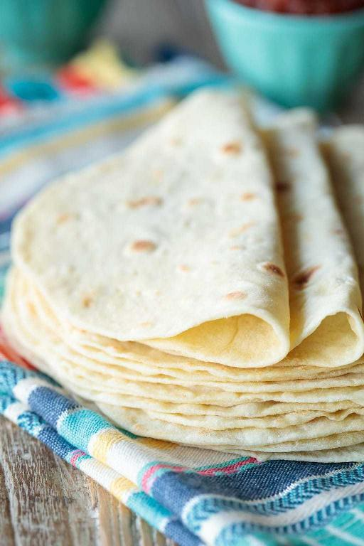

Tortilla

Info = Tortillas are one of the most popular food on the planet, it is rich in carbs,
and is used for stuffing meat, greens and souce in them to make them rich in flavour.
Ingredients:
3 cups all-purpose flour
1 teaspoon salt
1 teaspoon baking powder
One third of a cup of extra virgin olive oil, vegetable oil or other fairly neutral flavored oi
1 cup warm water
Instructions
Combine flour, salt and baking powder in a medium-size bowl. Using a sturdy silicone spatuala or a sturdy wooden spoon, mix dry ingredients until well combined.
Make a well in the center of the dry ingredients and add the oil and water.
Stir well from the bottom up, until all dry ingredients are incorporated and the dough begins to come together and form a shaggy ball.
Turn dough out onto a lightly floured work surface and knead for 1-2 minutes until the dough is nice and smooth.
Proceed with step number 3 below for the remainder of the recipe.